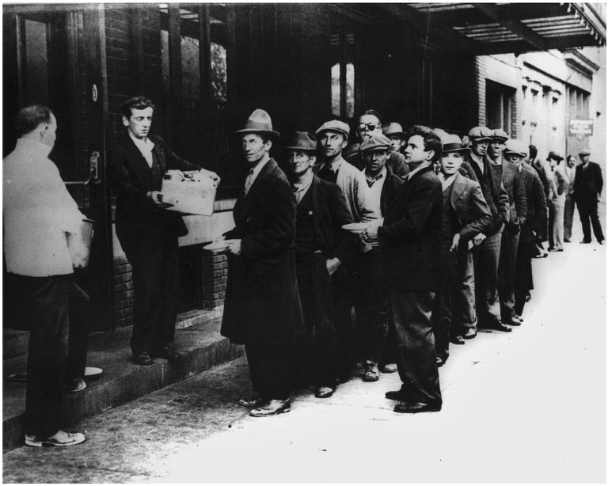
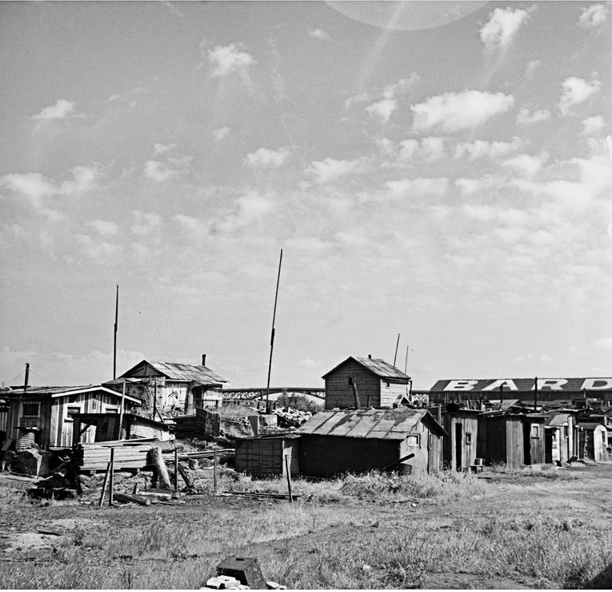
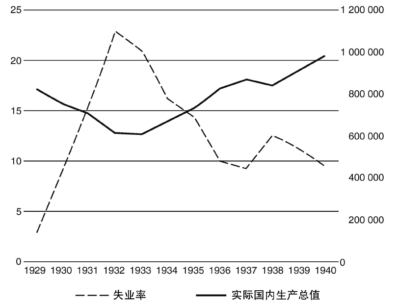

1930年代以前，美国也遭受过数次萧条。但本书所讨论的这次大萧条，不仅涉及范围广、持续时间长，还被新闻报道实时记录下来，在历史上留下的印记尤为深刻。（大萧条发生时，二十来岁的美国人可能还记得，所谓“西部”，曾经只不过是一片未开发的领土。）在这个新近互联互通的国家，遍布于各个城镇的广播报道和新闻影片，让人们看到自己的同胞在大萧条中经受了何等煎熬；随着经济形势持续恶化，大萧条使中产阶级变得越来越贫困，不同阶级的人们也开始相互同情。
大萧条到来时，四十多岁的美国人很可能还记得发生在1890年代中期的上一次大规模经济萧条。那次全球动荡引发了可怕的罢工，失业大军在乡间流浪，徒劳地寻找着那些根本就不存在的工作。在那次萧条期间，大部分选民投票反对自称会为受压迫者说话的民主党人威廉·詹宁斯·布莱恩担任美国总统。那一代美国人也同样记得，1890年代的那次大萧条发生在全球化浪潮之中，而彼时美国工厂里的许多工人还是不折不扣的异族新移民；但是，到了1930年代，情况已经发生了变化。第一次世界大战减缓甚至几乎中断了向美国移民的浪潮，而1920年代的限制性立法更是基本上关闭了进入美国的金色大门。工厂中再也看不到满是新移民工人的景象；同时，一代人以前那种将中产阶级与工人阶级分割开来的社会区隔，此时业已不复存在。
大萧条的严重不幸也模糊了小康与温饱之间的界线。无数人迅速从小康滑向温饱，那些有工作的人也越来越认为自己与失业的人没什么区别。收入等级之间的区隔大大缩小。仅仅在此前不久，美国中产阶级还会条件反射式地认为任何失业者都是懒汉、认为任何宣称政府理应为自己提供援助的人都是激进分子。然而，到了1930年代，他们越来越认为那成百上千万陷入困境的人们和自己类似，后者曾参与建设的这个国家正逐渐走向崩溃。不断缩小的阶级差距能帮我们解释为何许多美国人会衷心喜爱E.Y.哈尔堡的歌曲《兄弟，可否分我一毛硬币？》，这首歌曲在整个大萧条中被反复播放了一遍又一遍。
正如哈尔堡自己解释的，“唱歌者说道，我修建过铁路、修建过灯塔，我为你们扛过枪打过仗……我曾为这个国家投过资。可是我的红利都在哪儿呢？” [99] 彼时，美国大部分劳动力还未失业，他们本来或许会忽略掉歌词里提出的这个愤懑痛苦的问题，就像他们在美国历史上许多其他时期里所做的。然而，如同《纽约时报》在1933年初所报道的那样，随着形势日趋恶化，美国有产阶级——无论他们的财产多么微不足道——都接受了救济穷人的合理性，“把零钱塞到乞讨者的手中” [100] 。这个此前不久才被种族问题和民族问题所轻易割裂的国家，如今似乎变得更加团结了，尽管改进的程度非常有限。
在大股灾之后极短的时间里，经济危机便迅速发展到了骇人听闻的地步。在1932年，美国的失业率飙升至了劳动力人口的四分之一左右，1150万人无工可做。为理解上述数字，我们可以试想一下，这相当于当时整个纽约州的人口都处于失业状态，而纽约州是当时美国人口最多的一个州；换句话说，从长岛东端到伊利湖畔，从加拿大边境至宾夕法尼亚州，所有人都无业可就。
然而，上述推想并不完全准确。像儿童和全职家庭主妇这样的纽约州居民，一般而言本来就没有正式工作。然而，上文提到的那1150万失业人口，全部是无处领取薪水的劳动力 。他们中许多人背后，都有一个需要养活的家庭。因此，1150万失业人口，意味着近3000万美国人失去了收入来源。 [101] 因此，大约占总人口四分之一的美国人发现自己无力购买住房或者食物。 [102]
上述数字虽然很有冲击力，却并不足以充分刻画大崩溃的可怕影响。除了失业问题，当时还存在着开工不足的情况：即便是那些足够幸运保住了自己饭碗的美国人，也常会面临工作时间被压缩和工作报酬被削减的问题。雇主们希望尽可能地留住熟练工，所以一般不会裁员，而是呼吁员工与企业共同分担经济危机带来的压力。许多雇员也认为这种做法是公平的。因此，到1932年夏天，超过半数的美国工人无法全职工作，平均工作时间和报酬只相当于全职工作的59%。 [103]
美国人一般不大情愿寻求帮助，即便落入被迫求援的境地，他们也往往只向最为亲近的人开口。大萧条期间，他们惯常寻求帮助的途径却一条接一条地被堵死了。正如纽约市一名官员在1932年解释的，“维持家庭生计的主要劳动力失业后，他通常会首先动用存款，直到用光……之后，他会向朋友和亲戚借贷，直至亲友们无力再借钱给他。街角的杂货店和肉铺一开始允许他赊账，房东也会暂缓收租，但最终他们必须采取行动收回欠款，以便支付银行利息和上缴税费。这样，经过一段时间之后，失业者就再也无法通过惯常的渠道获得帮助。于是，许多以往并不穷困的人，最终也不得不申请救济” [104] 。

图1 1932年纽约市排队领面包的男人们
当亲戚与邻居无法再施以援手时，工人们有时还可以求助于由本地人发起和管理的互助救济基金，例如由工会或者公民团体为应对突发事件与支持孤儿和寡妇所设立的专项经费。美国人常在宗教与族群社区内创建这种互助计划。他们出于自尊，不希望自己社区中的伙伴沦落到求助慈善团体的地步，甚至更不体面，去申请政府救济。因此，在波兰裔美国人、德裔美国人、教会组织的堂区和团契以及其他各种各样的社区中，都设有救助机构，以尽力为不幸失业的成员提供帮助，直到他们找到新的工作。一位神父曾宣称：“让我们保有自尊，只要天主教慈善机构能够为教徒提供帮助，就不要 把手伸向公共救济经费。” [105]
然而，这些救助网络虽然足以在某个行业偶尔状况不佳时发挥作用，却因为大萧条所带来的巨大需求压力而相继垮塌。越来越多的人怀着羞愧领取公共救济，虽然这对他们来说代价高昂。有时候，出于维护自尊的需要，他们会在本该寻求帮助之后很久才求助，以挽救自己的生命。一位在免费诊所工作的医生事后回忆道：“穷人能够得到一些医疗服务，因为他们能去免费药房取药；富人能享受很好的医疗服务，因为付得起看病的费用。庞大的中产阶级无法获得任何医疗服务，他们的生活状况其实和穷人无异。……但是这种身份的人，很难接受慈善救济。……每天……有轨电车上都有人晕倒。人们会把他送到免费诊所，但不会问他任何问题。……大家都知道是怎么回事。他是饿晕的。当他清醒过来之后，大家就给他吃点东西。” [106]
历史上，美国城市可以利用自己的资金为辖区内的穷人提供救助，但大萧条发生后不久，就连市政府也无力再向市民提供帮助了。1932年，底特律的一位官员这样说道：
有时候，市政府的经费能够通过非传统渠道送达受助对象：卫生部发现纽约市五分之一的中小学生营养不良，公立学校的教师们尽管面临减薪威胁，仍然自掏腰包设立基金，为学生们提供帮助。 [108] 不仅公民组织和地方政府不堪重压，许多家庭亦然。一位失业者在接受采访时表示：“如果没有工作，就称不上是男人。” [109] 而那些不这么想的人，更容易应对危机所带来的压力。对于这些人来说，工作并不是生活的全部；作为丈夫、父亲、朋友或者某项爱好的发烧友，他们明白哪些东西值得为之努力。然而，这样的人毕竟是少数。如一位社会学家所写的，“普通美国人有种想法，认为只有工作才能过有尊严的生活。……从理论上说，经济活动应该是实现美好生活的手段，但事实上更引人关注的是手段本身，而不是目的” [110] 。
在大部分情况下，男人们把这种责任感深埋在心底。他们知道孩子们在多么密切地关注着自己，知道家人多么期盼自己能够得到一份哪怕是微不足道的工作，知道工作能给家庭带来多少欢乐，或者至少知道工作能消弭多少伤痛。一名曾在大萧条期间度过童年的男子回忆道：
有时候，外出寻找工作的男人再也没有回家。有些人露宿在门廊或者地铁里，有些人在城市和垃圾填埋场的边缘搭起窝棚。窝棚聚集的地方，很快就被美国人冠以“胡佛村”的称号。孩子们长到一定岁数、能够独立时，可能也会离家自谋生路，而不再依赖负担沉重的双亲。流浪汉们往往都是准备为自己讨生计的年轻男子，他们靠着扒棚车流动。铁路纠察员有时候会对这些“人类货物”故意视而不见，有时候却不会。其他旅人有时候会帮助他们，有时候却不会。总的来说，在大股灾之后的几年间，在路上流浪的美国人大约有200万之多。 [112]
当雇主需要招工时，他们根据个人偏好甚或偏见来选择把工作给谁。他们越来越普遍地雇用或者留下那些拥有工作经验的白人；由此造成的结果是，老人、儿童、妇女和非裔美国人被迫承受不成比例的高失业率。大股灾发生前，在妇女最初成为劳动大军的重要组成部分时，美国人便很容易倾向于相信：女人工作是为了能挣些微不足道的零花钱——在正常情况下，她们应当依靠作为一家之主的丈夫，男人会养活妻子和孩子们。在劳动力供给过剩的大萧条年代，有时是出于政策，有时是雇主习惯使然，已婚妇女更难找到工作，却更容易成为裁员的对象。 [113] 尽管如此，还是有越来越多的妇女寻求工作，她们主要是为了让家庭渡过难关，有时也希望能在大萧条时期依然保持中产阶级的生活方式。 [114] 与她们的父亲、丈夫、兄弟和儿子相比，妇女所面临的就业市场更为严峻。如果妇女被迫离开家庭，她们在路上遭遇人身威胁的可能性要比男性更大。资料表明，一些无家可归的失业妇女联合起来组成了旨在保护自己的社区，分享贫乏的资源、共用狭窄的房间、轮流使用床铺和服装。一位政治家将美国的劳动妇女形容为“最早遭受风暴袭击的孤儿” [115] 。

图2 俄勒冈州波特兰市附近，维拉米特河岸的“胡佛村”满是私搭乱建的窝棚
如果情况如此，那么黑人劳工就是紧随妇女接受大萧条风暴洗礼的一个群体。大萧条来临后，在美国城市中，非裔美国人失业的速度往往比白人同事快得多。造成这种情况的原因之一，在于他们赶上了一个不幸的历史阶段：黑人在相当长的时间内生活在农村，平均而言进入城市的时间较短，成为熟练工人的机会也远比白人更少。然而，技术水平相对偏低只是造成黑人失业率偏高的部分原因。黑人劳工注意到他们往往“最后被雇用、首先被解雇”，雇主甚至刻意让黑人下岗，以便腾出岗位雇用白人。全国城市联盟于1931年发布的一份研究报告指出：“这种做法相当普遍，人们有理由怀疑，那些旨在缓解白人失业问题的措施，未曾考虑过对黑人可能造成的影响。” [116]
由于就业市场上存在上述不平等情况，在大萧条时代仍然保有或基本保有工作的劳动力中，白人和男性所占有的比例比此前的时代更高。大萧条中的劳动群体具有明显的同质性，早先曾困扰美国民众的文化冲突问题则消失了。美国人的关怀重点转向了那些陷入危机的白人男性户主，这些人所面临的困难被他们视为整个国家的问题。 [117]
这些全国范围内的危机以前所未有的程度打破了城乡之间的固有界限。自从城市出现之日起，失业问题就像瘟疫一样会周期性爆发。当城市陷入萧条时，美国人便遵循民间传统回到乡间。传统上，农场工作不受那些折磨着城市的问题影响。在大萧条期间，许多美国人也确实前往乡间寻找农活以维持生计。1932年，美国的农业人口升至了两次世界大战之间的最高点。 [118] 然而，一系列不幸的事件却使美国农村在大萧条期间遭受到了与城市同样沉重的打击。
由于运输风险和普遍存在的物资匮乏抬升了农产品价格，美国的农业收入在第一次世界大战期间达到了顶峰。农产品价格高涨刺激农民开垦更多土地，当时新近面世的拖拉机能让他们快速完成。在第一次世界大战后的经济萧条期间，农产品价格暴跌；到了1920年代，当农产品价格再度回升时，农民需要购买的商品价格却上涨得更高。农业机械化作业的新风尚使人们能够以更低的成本大规模生产农产品。拖拉机甫一面世，就替代了人力和畜力。那些被拖拉机夺去工作的劳动力，离开农村另觅生路。 [119] 甚至连美国城市当时新近出现的繁荣也对农民造成了打击：随着市民们的生活状况得到改善，他们不再单纯为果腹而饮食，开始注重口味。宽松的腰带曾象征健康与富足，此时身材苗条却成为了风尚，食品生产者的收入也随之降低。不仅如此，和其他美国人一样，农民们也为扩建农场和实现机械化而大量负债，这使他们在危机面前显得脆弱。 [120]
大股灾撼动了这个系统，对农民的脆弱保障土崩瓦解。农业收入急剧下降。债权人强迫农民出售财产以偿还拖欠的债务。 [121] 农民和邻居们常常努力阻止剥夺他们财产的企图，并且这种努力变得越来越频繁。他们会联合起来，在出售抵押品的拍卖会上买下被剥夺的财产，无偿退还给原主。他们也会威胁那些试图强制出售财产的执法人员。
气象灾害与人为灾难结伴而来。从1931年开始，大平原上的降雨越来越少，最终跌破了维持农作物生长的最低水平。不久土地便会干燥开裂、无法再聚集成团块，会被狂风轻而易举地吹走。 [122]
南部受到历史因素的持续困扰。早在奴隶制存在的时期，那里的人们就依靠报酬低廉的农活勉强度日。只有四分之一的美国人口生活在南部，那里却集中了全国四成以上的农业工人，他们的收入全国最低。 [123] 在许多情况下，他们是将自己的一部分收成上缴给地主的佃农，几乎无法掌控自己的命运。一位妇女回忆道：“1929年，我和丈夫都是佃农。那年本有收成，地主却收走了所有的粮食，我们几乎无以为生。” [124]
农业技术的进步和农村面临的灾难都迫使人们选择离开。像历史上多次出现过的先例那样，他们转向别处寻找更好的机会。大萧条到来之前，许多人向西部的加利福尼亚州移民。当时，那里的就业市场和天气总体情况都要更好。相对幸运的人们是驾车去的：1931年，超过80万辆汽车驶入了被称为“金州”的加利福尼亚。 [125] 相对不幸的人们则只能依靠火车：在加州拥有绵长运营网线的南太平洋铁路公司计算出，仅在1932年的一个月中，他们就从货车车厢中驱逐了八万名扒车客。 [126] 许多通过这两种方式进入加州的移民最终都在绵长的谷底扎下根来，居住在帐篷或者小木棚里，捡拾收割后遗留下的谷物，只能依靠豆类和大米维生。有观察者估计，在这类营地中，超过四分之一的儿童营养不良，其中一些甚至因此死亡。 [127]
一无所有的民众被干旱和风暴赶出家园，背负重重苦难却依然意志坚强——这幅画面不久便在全美各地人们的头脑中打下了深刻的烙印。此后多年，在记者的报道和幸存者的故事中，在沃克·埃文斯和多罗西娅·兰格的不朽照片中，在詹姆斯·阿吉和洛雷纳·希科克的文章中，这些在希望田野上的穷途困境，便是大萧条的样子。
然而，我们也需要记住，这些图景并没有反映大萧条的每个方面。如果冷静地看待历史，那些原本生活还算富足的人们所遭受的突然打击，可能要更加沉重。比如，并非所有不幸的移民都来自长期贫困的阶层，甚至并非都属于工人阶级。许多人发现，由于本地经济衰退，自己被剥夺得一无所有。一位成功的拖拉机经销商的儿子后来回忆道：“我们曾经居住在一所大宅之中，生活富裕，直到遭遇晴天霹雳——老爸失业了。” [128]
随着全国经济摇摇欲坠、几乎完全崩溃，连那些比较富裕的美国人也开始深入思考贫困问题，而他们此前很少会深入细致地思考穷人的命运。这些比较富裕的美国人自己或许并未失业，而且不合常理的是，由于大萧条期间绝望的卖家大幅下调商品价格，他们反而以更低成本过上更好的生活。但是，在那种情况下，没有人能过得无忧无虑。他们用纸板修补自己的皮鞋，把破碎的床单缝好再用。 [129] 苏格兰胶带是当时新近出现的一种透明胶带纸，人们大量购买这种胶带来修复已有的东西，而不是购进新品。 [130]
危机在此基础上进一步加剧，似有旷日持久且蔓延至全局的趋势。美国民众也越来越觉得，那些不幸的人们无法承担起依靠自己走出困境的责任；除非有上帝的恩典，无论多么节俭与勤奋的国民，某天都有可能遭遇不幸。当自己所在的社区被证明难以抵御灾难时，他们就越来越多地开始倾听那些通过广播传来的全国性言论。
其中一种言论来自查尔斯·库格林神父，他每周的广播节目都传遍整个美国。 [131] 库格林的广播生涯始于底特律外的一个教区，他在1920年代中期利用电波与本地“三K党”公开抗争。他才华横溢，在广播中对越来越广泛的话题发表看法，这为他赢得了更多听众。人们说，库格林广播的时候，你可以在美国城市中走过许多街区而不会漏听一词一句，因为神父的声音总会从忠实听众的窗户里飘向街道。在大萧条中，当库格林通过全国性的广播网络发表观点时，他越来越多地论及政治话题。 [132]
库格林的听众主要是中产阶级，他们希望一切能回到大股灾以前，而他们又没有足够的财富来使自己免受大萧条带来的物质和心理冲击。 [133] 库格林抨击共产主义，但如同他在一次国会听证会上所表示的，他认为共产主义在世界上最得力的推手是像亨利·福特那样一毛不拔的资本家——这些资本家对工人们有限的、合理的救济要求视而不见，从而可能引发一场足以摧毁一切的革命。 [134] 到1932年，库格林和他的听众有足够理由认为赫伯特·胡佛与福特一样一毛不拔。在担任总统的最后一个夏天，胡佛表态反对向一群特殊的美国人提供他们新近要求的救济，这个群体就是退伍军人。
1924年，国会投票通过决议，依据服役年限和地点向第一次世界大战的退伍军人提供追加津贴，或称酬恤金。政府向每位退伍军人开具了票据，上面有他们应得的酬恤金数额，可以在1945年或者他们去世的时候领取。随着日子越来越难过，退伍军人迫切希望能够兑现这笔在很久以后才能领取的款项，他们认为政府也许会慈悲为怀，提前发放一些。对于许多退伍军人来说，死后才能收到的酬恤金意义不大，他们希望当时就领取。毕竟，当时国会在总统的催促下刚刚组建了复兴金融公司，该机构最多能够动用20亿美元以挽救银行和铁路。库格林问道：“如果政府能向银行家和铁路主支付20亿美元，那它为什么不能把这20亿美元付给退伍军人呢？” [135]
和库格林持有同样想法的退伍军人决定前往首都华盛顿，亲自向政府提出要求。早期的退伍军人游行组织主要来自俄勒冈州的波特兰市，但消息不久就传播开来，吸引了更多老兵以个人或者群体的方式加入。华盛顿的警察着手准备应对两万人的到来，这支队伍被称为“酬恤金大军”。渗透进游行队伍以甄别潜在威胁的特工人员发现：“总的来说，其中只有很少的共产党人……对其他人思想的影响有限。退伍军人主要是陷入困境的美国人，他们绝对无意推翻政府。” [136] 6月7日，在十万围观者的欢呼声中，数千名退伍军人列队穿越了华盛顿。 [137]
其他一些参与保卫首都的人则对游行者看法不同。时任美国陆军总参谋长的道格拉斯·麦克阿瑟将军开始调集包括坦克在内的军力，以应对那些在城市警察帮助下安营扎寨的示威者。退伍军人的营地与国会山分居阿纳卡斯蒂亚河两侧。有人多次警告他们看起来像颠覆分子，于是这些游行者采取了严谨的自我纠察措施，组织了法庭和其他非正式的团体，将共产主义者驱逐出去。然而，这些措施对改善他们的处境毫无帮助。国会没有投票支持向他们提供救济便进入了休会期，而他们在首都待的时间越长，就越让白宫和军队感到不安。7月底，麦克阿瑟决定动用全副武装的部队解决问题，用他自己的话来说，要“打断酬恤金大军的脊背”。上了刺刀的士兵们开进城市，向游行者和围观者投掷催泪瓦斯，骑兵队冲进人群；乔治·S.巴顿当时是陆军少校，他回忆道：“砖块横飞，马刀在起落间发出令人愉悦的声响，暴徒们四散逃窜。” [138] 事后，麦克阿瑟宣称，他从围观者那里听到了自己习惯听到的感激的叫喊声。 [139]
赞赏麦克阿瑟做法的人即便真的存在，肯定也为数不多。记录武装部队和非武装退伍军人冲突的影像片段显示：坦克行驶在华盛顿街头，老兵们的营地被焚毁，浓烟飘过了国会大厦的穹顶。麦克阿瑟和胡佛宣称，他们并不相信游行队伍的主力真的是退伍军人。但因不堪贫困而向议员请愿的民众受到士兵驱赶的画面，却引发了观众的同情。一位妇女说道：“我觉得自己就是他们当中的一员。” [140]
在奥尔巴尼，纽约州州长和民主党总统候选人富兰克林·D.罗斯福在《纽约时报》上读到了关于酬恤金游行的报道。他望着报纸，对一位助手表示：在这场灾难之后，再也无须将胡佛视为有竞争力的对手。罗斯福说，若非为游行者感到难过，他或许会对胡佛感到遗憾。实际上，罗斯福本人也不认为政府有能力向退伍军人支付酬恤金，他在成为总统后甚至否决了一项相关法案；但是，他认为退伍军人仍应得到一些富有同情心的关怀。他思考了一阵，点上香烟，平静地说道，那些向政府提出要求却被无礼对待的民众，“为咱们的选战提供了一个主题” [141] 。

图3 国内生产总值与失业率。失业率表示失业人口在非军事劳动力人口中所占的百分比，刻度位于图左。实际国内生产总值以1996年的百万美元为单位，刻度位于图右